설계에서 운영까지, 하네스마다 역할을 나눠서
v2의 흐름은 설계 → 구현 → 검증 → 반영 → 운영이다. 킷만으로 이 흐름이 끝까지 돌고, AI-DLC와 Entire는 켜면 설계 단계와 대화 기록을 맡는 선택 모듈이다. 하네스마다 역할을 나누고, 진행 상황과 문서는 대시보드 한 곳에서 본다. 이 장은 그 설계다.
바꾸지 않을 원칙
- 원본은
.agents/한 곳. 하네스 폴더의 파일은 원본에서 만든 실제 파일(복사·생성·병합)이다. 심볼릭 링크와 "원본을 읽어라" 포인터는 쓰지 않는다. - 완료 판정은
scripts/verify.sh한 곳. 훅·pre-commit·CI·CLI는 그것을 부르기만 한다. - 사람이 고친 파일과 다른 도구의 파일은 덮지 않는다.
- AI-DLC·Entire 없이도 전 흐름이 돈다. 둘은 기본 꺼짐인 선택 모듈이다. 켜면 같은 자리를 대신하거나 기록을 더하고, 꺼도 빠지는 단계가 없다.
- 외부 도구의 원본 파일은 고치지 않는다. 우리 개선은 킷 층(규칙·스킬·훅·템플릿)에 둔다. 원본을 고치면 다음 업데이트에서 덮이거나 충돌한다.
- 쓰는 것만 깐다. 하네스와 모듈은 고른 것만, 모듈은 기본 꺼짐.
- 프로젝트 밖에는 쓰지 않는다. 사용자 폴더는 스킬 목록을 만들 때 읽기만 한다.
설계에서 운영까지
흐름은 다섯 단계다. 설계 단계는 킷의 설계 명령이 기본으로 맡고, AI-DLC를 켜면 AI-DLC가 대신한다. SDD는 구현 단계 안에서 Unit 하나를 끝까지 만드는 데 쓴다.

| 단계 | 하는 일 | 남는 것 | 사람 |
|---|---|---|---|
| 1 설계 | 요구사항을 받아 질문 → 스토리 → Unit 분해를 하고 기획물을 만든다. 킷 /hx-intent가 기본이고, AI-DLC를 켜면 AI-DLC가 대신한다 | Intent 문서와 Unit 목록, 요구사항 문서 · 화면기획 · 디자인기획 · 백로그(HTML) | 범위 · Unit · 기획물 승인 |
| 2 구현 | Unit마다 SDD 이슈를 열어 design → tasks → 코드·테스트 | SDD 세 문서, 코드, 체크포인트(Entire를 켰을 때) | design 승인 |
| 3 검증 | verify.sh, 자체 리뷰 에이전트, 보안 스캔, 품질 조회 | MR 코멘트·review.md, 스캔 결과(SARIF), 품질 게이트 | MR 승인 |
| 4 반영 | 병합 뒤 기능 문서·API 문서를 고치고 승인 기록을 남긴다 | docs/features/, approvals.md | — |
| 5 운영 | 배포 뒤 지표·장애를 기록하고 다음 요구사항으로 넘긴다 | 운영 기록 | 배포 |
킷만으로, 또는 AI-DLC · Entire와 함께
| 자리 | 킷만(기본) | 모듈을 켰을 때 | 뒤 단계가 읽는 것 |
|---|---|---|---|
| 설계: 요구사항 정리 · 질문 · 스토리 · Unit 분해 | /hx-intent: Intent 문서, 질문 파일(여럿이 답한다), 스토리와 EARS 수용 기준, NFR·위험 레지스터, Unit 목록과 의존 순서, 계약 Unit 먼저 | AI-DLC 설계 단계. 킷 어댑터가 AI-DLC 산출물을 같은 형식의 Intent·Unit 목록으로 옮긴다 | .agents/docs/intents/<INT-키>-<이름>/의 Intent 문서와 Unit 목록 |
| 세션 기록 | 대화 원문은 남기지 않는다. 추적은 SDD ↔ 커밋 ↔ MR 링크와 인수인계 문서로 한다 | Entire 체크포인트(커밋마다 대화 원문) | 대시보드의 체크포인트 칸은 켰을 때만 보인다 |
- 설정은
harness-kit.json의"flow": { "design": "kit" | "aidlc", "record": "none" | "entire" }이고 기본값은kit과none이다. - Unit 하나가 SDD 이슈 하나가 된다.
/hx-specify --from-unit <Unit>이 스토리·수용 기준을 requirements로 옮기고intent:·unit:링크를 단다. Unit이 킷에서 왔든 AI-DLC에서 왔든 명령과 결과 형식은 같다. /hx-intent의 내용은 핸드북 05장 보강안과 06장 설계의 층을 따른다. 나눌지는 스토리 5개 이상, 도메인 2개 이상, 사용자 유형 3개 이상, 외부 통합 3개 이상 중 하나라도 해당하는지로 정한다.- AI-DLC v2에도 구현 쪽 스테이지가 있어 SDD와 겹친다. 설계 단계까지만 돌리는 스코프가 있으면 그것을 쓰고, 없으면 AI-DLC의 기능 설계 산출물을 SDD design의 입력으로 쓴다(P22 착수 전 확인).
- 릴리스마다 두 구성(킷만 / 킷 + AI-DLC + Entire)으로 요구사항 하나를 운영 기록까지 돌리는 시험을 통과해야 한다.
실행 배치: 하네스별 역할
에이전트 작업을 어느 하네스가 돌리는지다. 누가 무엇을 승인하는지(사람 역할)는 05장에 있다. 채널톡 사례 중 AI-DLC와 맞는 것만 가져왔다(05장). 아래는 기본값이고 팀이 harness-kit.json에서 바꾼다(D7).
| 역할 | 기본 하네스 | 이유 | 킷 역할 파일 |
|---|---|---|---|
| 설계 | Claude Code(AI-DLC는 켰을 때) | 기획·디자인 스킬이 Claude 쪽에 가장 많다(이 컴퓨터 기준 사용자 스킬 221개) | designer 새로 |
| 구현 | Claude Code | Entire를 켤 때 이 하네스에만 켜면 리포마다 기록되는 세션이 하나라 기록이 섞이지 않는다 | worker |
| 코드 리뷰 | Codex | 쓴 모델과 다른 모델이 본다. 채널톡도 9월부터 이렇게 나눴다 | reviewer |
| 보안 · 품질 | 스캐너 + Codex | 판정은 도구가 하고, 에이전트는 결과를 해석하고 우선순위를 매긴다 | reviewer |
| 반영 · 운영 기록 | Kiro | 파일 변경 이벤트에 붙는 Kiro 훅으로 문서 갱신을 걸 수 있다 | documenter 새로 |
| 진행 판정 | 사람 + 관리 페이지 | 단계마다 승인은 사람 몫이다(AI-DLC 승인 게이트). 채널톡의 PM 세션 판정은 가져오지 않는다 | — |
"flow": { "design": "kit", "record": "none" },
"roles": {
"design": { "harness": "claude" },
"implement": { "harness": "claude" },
"review": { "harness": "codex" },
"docs": { "harness": "kiro" }
}이 설정으로 킷이 하는 일은 넷이다. 역할 파일을 맡은 하네스 형식으로 생성하고, 세션 시작 훅이 그 세션의 역할을 알려 주고, Entire를 켰다면 구현 하네스에만 기록을 켜고, 대시보드에 누가 무엇을 맡았는지 보여 준다.
AI-DLC · Entire 선택 모듈
둘 다 기본 꺼짐이다. 켜면 각 도구의 원본을 그대로 설치하고 그때그때 올린다. 끄면(npx harness-kit remove aidlc) 킷만 구성으로 돌아가고, 킷이 병합한 훅과 등록만 빠진다. 각 도구가 만든 산출물 파일은 지우지 않는다.
- 설치각 도구의 설치기로
npx harness-kit add aidlc는aidlc가 있는지 보고, 없으면 설치 명령을 보여 주고, 있으면 설계 하네스에aidlc config --harness …를 실행한다. 생긴 파일은 외부 소유로 기록하고 훅을 병합한다.add entire는entire enable뒤 구현 하네스 하나만entire agent add한다.- 업데이트그때그때
npx harness-kit outdated가 킷·AI-DLC·Entire의 설치 버전과 최신 버전을 보여 준다. 올리는 것은 각 도구 명령(aidlc update,brew upgrade entire)으로 하고, 올린 뒤doctor가 훅과 경로가 그대로인지 본다. 검증한 버전 범위는harness-kit.json에 적는다.- 우리 방향으로 개선원본은 그대로
- 바꾸고 싶은 동작은 (1) 킷 층의 규칙·스킬·훅·템플릿으로, (2) 원본 도구가 열어 둔 확장 지점으로 넣는다. 둘 다 안 되면 업스트림에 제안하고, 그동안은 킷 문서에 우회 방법을 적는다.
- 리뷰 에이전트자체 제작
- Entire 포지의 리뷰나 AI-DLC 안의 검토 단계에 기대지 않고 킷
reviewer역할로 만든다(아래). 우리 규칙과 SDD 문서를 근거로 판정해야 하기 때문이다. - Entire 주의세 가지
- 공개 저장소면 대화 원문이 공개된다(D6). 0.x라 저장 방식과 명령이 바뀐다. 같은 폴더의 동시 세션은 기록이 섞이므로 구현 하네스에만 켠다.
- GitLab에서현장 두 곳은 gitlab.com
- 기록과 push는 된다. 별도 기록 리포도 gitlab.com이면 된다. 체크포인트를 웹에서 보는 entire.io 화면은 GitHub 전용이므로 대시보드가
entireCLI로 체크포인트 목록을 보여 준다. GitLab 프로젝트의 squash 커밋 메시지 템플릿에%{all_commits}를 넣어 트레일러를 살린다. - Sourcetree에서
- 커밋은 Sourcetree로 해도 git 훅이 돌아 체크포인트가 연결된다. 처음 한 번 Sourcetree로 커밋해 트레일러가 붙는지 확인한다. 체크포인트 보기는 CLI나 대시보드로 한다.
설계 기획물
요구사항이 들어오면 설계 단계에서 네 가지를 만든다.
| 기획물 | 담는 것 | 만드는 법 |
|---|---|---|
| 요구사항 문서 | 목표, 범위 밖, 스토리, 수용 기준, NFR, 위험 | Intent 문서와 스토리(킷 또는 AI-DLC 산출물)를 HTML로 렌더 |
| 화면기획 | 화면 목록, 화면 사이 흐름, 화면별 요소와 상태(빈 화면 · 오류 · 로딩), 와이어프레임 | 킷 템플릿 + 설치된 기획 스킬 |
| 디자인기획 | 디자인 방향, 색·글꼴 토큰, 컴포넌트, 접근성 기준 | 킷 템플릿 + 설치된 디자인 스킬 |
| 백로그 | Unit·이슈 목록, 우선순위, 의존 순서, 상태 | Unit 목록 + SDD 보드에서 생성 |
원본 형식은 이 문서의 제안이다. 와이어프레임은 HTML 원본으로 두어 바로 눌러 본다. 나머지는 Markdown 원본으로 리포에 두고 HTML은 생성한다. HTML 원본은 에이전트가 고칠 때 diff가 커서 리뷰하기 어렵다. 생성된 HTML은 대시보드 문서 탭에서 바로 열린다. 자리는 .agents/docs/intents/<Intent>/plans/다(설계서 공통 계약).
명령은 /hx-screen-plan · /hx-design-plan · /hx-backlog 셋을 새로 둔다. 각 명령은 스킬 지도에서 그 단계에 맞는 스킬이 이 컴퓨터에 깔려 있는지 보고, 있으면 그 스킬을 쓰고 없으면 킷 템플릿을 쓴다.
이슈 단위 SDD
지금은 new-feature.sh <영역> <이름>이 영역 폴더(<영역>-specs/issues/) 안에 순서 번호로 이슈를 만든다. knots의 recording-specs 하나에 이슈 73개와 옛 구조 문서 60개가 쌓였다. 이슈마다 폴더 하나를 두고 같은 키로 브랜치·worktree·MR·Jira를 잇는다.
.agents/docs/issues/
├── HDRV3D-12-upload-cleanup/ Jira 키 그대로
│ ├── requirements.md 머리에 area: upload, intent: INT-3, unit: U-2
│ ├── design.md · tasks.md
│ └── review.md · approvals.md · handoff-*.md
└── KNOTS-17-desktop-parity/ Jira가 없으면 킷이 같은 모양으로 만든 키- 키 규칙은 05장이다(D9). 지금의 영역 폴더는
area:값이 되고, 보드·관리 페이지가 이 값으로 묶어 보여 준다. - 기존 문서는
sdd-layout.py migrate --dry-run으로 옮길 목록을 보고 옮긴다. 옛 구조는 읽기만 지원한다. - v2 엔진과 상관없는 변경이라 v1.1에서 먼저 낸다(03장).
검증 범위: 바꾼 기능만
지금 검증이 1~2시간 걸리는 원인은 에이전트가 완료 확인으로 전체 검증(--full)을 돌리는 데 있다. knots SDD 기록 59곳에 남아 있고, 상위 리포에서 한 번 돌리면 도메인 리포 전부를 차례로 돈다(01장). 검증 시간은 모델이 아니라 바꾼 범위로 정해져야 한다.
| 레벨 | 범위 | 언제 | 목표 시간(제안) |
|---|---|---|---|
| fast | 구조 · SDD 상태 · 포맷(빌드 도구 없음) | 턴이 끝날 때마다 | 수 초 |
| changed(기본) | 바꾼 파일과 그에 연결된 테스트·정적 분석 | Bolt(작업 묶음) 하나가 끝날 때, 커밋 전, push 전 | 1~3분 |
| affected 새로 | 바꾼 파일이 속한 모듈과 그 모듈을 쓰는 모듈 | MR 올리기 전 한 번, MR 파이프라인 | 5~15분 |
| full | 전체 | CI만(야간 · 릴리스 전), 사람이 터미널에서 직접 | 제한 없음 |
- 에이전트 세션에서
--full은 훅이 막고 "전체 검증은 CI가 돈다"고 알린다(D10). - 바꾼 파일에 맞는 테스트를 못 찾으면 full을 권하지 않고 그 모듈 테스트(affected)로 넓힌다. 그래도 없으면 미검증으로 보고한다.
- 여러 리포를 묶은 상위 리포 게이트는 바뀐 도메인만 부른다.
- 단계마다 걸린 시간을
.agents/state/verify-last.json에 남겨 관리 페이지에서 느린 단계를 본다. - tasks 템플릿의 "full 선택/이유" 칸은 "affected 결과 · CI full 링크"로 바꾼다.
검증: 리뷰 · 보안 · 품질
자체 리뷰 에이전트 /hx-review
- 입력
- MR diff(원격 브랜치를 읽어 체크아웃이 필요 없다), SDD 세 문서, 규칙 원본, 스캔 결과.
- 보는 것
- 요구사항 커버리지(
R#·SC-#), 설계 준수(ADR), 규칙(보안 · API 표준), 엣지 케이스(동시성 · 권한 · 경계 · 실패 경로), 테스트 충분성. - 출력
- MR 코멘트(GitLab은
glab, GitHub은gh)와 커밋하지 않는 로컬 보고서.agents/reports/review/<이슈키>.md. 발견마다 심각도·위치·근거·권고를 적는다. 리뷰 세션은 기능 브랜치를 체크아웃하지 않으므로, 구현 세션이 지적을 처리하면서 결과를issues/<key>/review.md로 정리해 커밋한다. - 게이트
- CRITICAL·HIGH가 열려 있으면 승인할 수 없다.
verify.sh --full이review.md를 확인한다.
정적 분석: 오픈소스 조합
SonarQube는 무료 Community Build가 있지만 브랜치·MR 분석과 일부 보안 규칙이 유료 판에만 있다. 킷은 SonarQube를 쓰지 않고 오픈소스 도구를 묶어 같은 일을 한다(D8). 공통 층은 언어와 상관없이 돌고, 스택 층이 그 언어의 전용 도구를 더한다.
| 층 | 무엇을 | 도구(라이선스) |
|---|---|---|
| 공통 | 코드 취약 패턴 | Semgrep CE 또는 그 오픈소스 갈래 Opengrep(LGPL-2.1) |
| 비밀값 | gitleaks(MIT) | |
| 의존성 취약점 | OSV-Scanner 또는 Trivy(Apache-2.0) | |
| 중복 코드 | jscpd(MIT, 여러 언어) | |
| 복잡도 | lizard(MIT, 여러 언어) | |
| jvm | 품질 · 버그 · 보안 | PMD, Checkstyle, SpotBugs + Find Security Bugs, Kotlin은 detekt · ktlint, 커버리지 JaCoCo |
| python | 린트 · 보안 · 타입 | Ruff(보안 규칙 S 포함), Bandit, mypy, 커버리지 coverage.py |
| web · electron | 린트 · 보안 · 타입 | ESLint + 보안 플러그인, TypeScript strict, 커버리지 c8 · istanbul |
| go | 린트 · 보안 | golangci-lint(gosec 포함), govulncheck, 커버리지 go cover |
- 결과는 모두 SARIF로
.agents/reports/에 모으고, SARIF를 내지 못하는 도구는 킷이 변환한다. 관리 페이지 검증 탭이 SonarQube 대시보드 자리를 맡는다: 심각도별 문제, 중복률, 복잡도, 커버리지, 추세. - 품질 게이트는 새로 생긴 문제만 막는다(SonarQube의 "새 코드" 기준과 같은 방식). 기존 문제는 기준선 파일(
.agents/quality-baseline.json)에 적어 두고 막지 않는다. 기준값은.agents/quality-gate.json에서 팀이 정한다. 제안값: 새 CRITICAL 0건, 새 코드 중복 3% 이하, 함수 복잡도 15 이하. - 검증 레벨을 따른다. changed는 바꾼 파일만(Semgrep · gitleaks · 린터), affected는 모듈 단위(SpotBugs · 커버리지), 의존성 검사는 lock 파일이 바뀌었을 때만 돈다. 전체 분석은 CI 야간에 돈다.
- MR에는 요약 코멘트 하나만 남기고 자세한 내용은 관리 페이지에서 본다.
- Semgrep 공식 규칙 모음에는 2024-12부터 별도 규칙 라이선스가 붙는다. 킷은 규칙을 묶어 배포하지 않고 설치할 때 받아 쓴다. 조건이 걸리면 Opengrep과 그 규칙을 쓴다.
승인 기록
상태를 approved로 바꾸거나 MR을 승인할 때 누가·언제·어떤 말로 승인했는지 approvals.md에 덧붙이기만 한다. 대화에서 한 말은 승인이 아니다. 승인은 harness-kit approve, 관리 페이지 승인 버튼, Jira에서 사람이 한 상태 전이로만 하고, 사람이 쓴 문구는 그 기록에 함께 남긴다. 설정에서 base 브랜치 직접 push를 막고, 승인 기록 없이 completed로 옮기면 훅이 막는다.
worktree 운영
같은 리포에서 동시에 파일을 쓰는 세션이 둘 이상일 때만, 정해진 자리에, 정해진 수명으로 쓴다(D5).
언제 쓰나
- 세션을 파일을 쓰는 세션(설계 문서 · 구현 · 반영)과 읽기만 하는 세션(리뷰 · 스캔)으로 나눈다. 쓰는 세션은 각자 브랜치에서 일한다.
- 메인 폴더에서 쓰는 세션은 한 번에 하나다. 사람이 혼자 일할 때와 같다.
- 동시에 쓰는 세션이 더 있으면 그 세션만 worktree로 간다. 구현은 전체를 체크아웃하고, 문서만 쓰는 세션은 문서 폴더만 체크아웃(
--docs, sparse-checkout)해서 용량이 거의 늘지 않는다. - 읽는 세션은 worktree를 만들지 않는다. 리뷰는 원격 브랜치의 diff를 읽는다.
- 긴급 수정이나 오래 도는 에이전트 작업처럼 진행 중인 작업을 건드리면 안 될 때도 worktree를 쓴다.
자리: 리포 옆 <리포>.worktrees/
단일 리포
~/dev/
├── my-api/ 메인 폴더 (develop) — 사람, 설계·리뷰 세션
└── my-api.worktrees/
├── PROJ-12-login/ 구현 세션 A feat/PROJ-12-login
└── PROJ-15-token-expiry/ 구현 세션 B fix/PROJ-15-token-expiry
submodule 있는 리포
~/dev/
├── knots-platform/ 메인 폴더 (상위 리포 + 도메인 submodule)
└── knots-platform.worktrees/
└── knots-domain-app/ worktree는 도메인 리포 단위로만
└── 154-desktop-parity/ 구현 세션 feat/154-desktop-parity- 프로젝트 밖에 둔다. JetBrains는 프로젝트 안에 worktree를 두면 IDE 연동이 깨진다고 명시한다. 리포 옆이면 Finder와 IDE 최근 프로젝트에서 바로 찾고, 지울 대상이 리포마다 한 폴더로 모인다.
- submodule 있는 리포는 상위 리포를 worktree로 만들지 않는다. git 공식 문서가 권하지 않는다. 고칠 도메인 리포만 만들고, 상위 리포 포인터는 병합 뒤 메인 폴더에서 올린다.
claude -w의 기본 자리(.claude/worktrees/)는 쓰지 않는다.WorktreeCreate훅으로 같은 자리에 만든다.- 자리는
harness-kit.json의git.worktreeRoot로 바꿀 수 있다. knots는 지금 쓰는~/knots-work를 그대로 지정할 수 있다.
IDE에서 보기
| IDE | 보는 곳 | 킷이 할 일 |
|---|---|---|
| VS Code 1.103+ | Source Control → Repositories → Worktrees, 새 창으로 열기 | .vscode/settings.json에 git.detectWorktrees: true를 병합한다 |
| IntelliJ 2026.1+ | Git 창 → Worktrees 탭, 더블클릭으로 새 창 | 단일 리포 프로젝트만 지원. submodule 리포에서는 탭이 숨겨진다 |
| 공통 | wt open <이슈키>가 IDE를 그 폴더로 연다 | 대시보드 작업 공간 탭에 목록·경로·브랜치·용량을 띄운다 |
용량 묶기
| 늘어나는 것 | 묶는 방법 |
|---|---|
| git 기록 | 늘지 않는다. .git을 공유한다 |
| 소스 파일 | 리포 크기만큼. 큰 리포는 필요한 모듈만 체크아웃(wt new --only <폴더>) |
| 의존성 | pnpm·uv는 전역 저장소 링크라 거의 0. npm은 macOS에서 node_modules를 APFS 복제(cp -c)로 가져와 고치기 전까지 0 |
| 빌드 결과물 | Rust CARGO_TARGET_DIR 공유, Gradle·Go 사용자 캐시 공유. worktree의 build/는 worktree와 같이 지워진다 |
| 남은 worktree | 끝(변경 없음 + 커밋 모두 push)이면 wt done이 바로 지운다. 리포당 동시 3개까지. 합계가 기준을 넘으면 경고 |
경로가 달라서 생기는 문제
- 로컬 설정 파일(
.env,local.properties)은.worktreeinclude한 목록으로 관리한다. Claude Code가 이 파일을 읽고, 킷wt new도 읽고, VS Codegit.worktreeIncludeFiles도 이 목록에 맞춘다. - 포트는 worktree 번호만큼 밀어
.env.worktree에 적는다. - 킷 훅이 worktree를 따라가게 고친다. Claude Code는 worktree에 들어가도
${CLAUDE_PROJECT_DIR}이 메인 폴더를 가리키고, 지금 킷의 보호 경로·세션 시작 훅은 스크립트 위치로 리포를 정한다. 훅이 입력의cwd로 대상 리포를 정하게 바꾼다(P18).
명령
매일 쓰는 명령이라 Node 없이 도는 리포 스크립트(scripts/harness/worktree.py)에 둔다.
- wt new <이슈키> [--docs]
- 구현이면 design이 approved인지 확인하고, base에서 브랜치와 worktree를 만들고, 로컬 설정을 복사하고, 세션 점유를 등록한다.
--docs는 문서 폴더만 체크아웃한다. - wt list
- worktree마다 브랜치 · 이슈 · 변경 여부 · push 여부 · 용량 · 마지막 사용 시각.
- wt open <이슈키>
- 설정한 IDE(
code·idea)로 연다. - wt done
- 끝의 정의를 검사하고 통과하면 지운다. 통과하지 못하면 남은 이유를 출력한다.
- wt gc [--apply]
- 기본은 목록만,
--apply면 끝난 것만 지운다. 에이전트는 사람이 요청할 때만--apply를 쓴다.

관리 페이지(대시보드)
킷을 설치한 리포에서 npx harness-kit dashboard를 실행하면 로컬 주소에 관리 페이지가 열린다. 진행 상황과 문서를 보고, 문서를 고쳐 저장하고, 승인하고, 켜 둔 Claude 세션에 작업을 요청한다.
┌─ harness-kit · knots-platform ─── develop · v2.2 · doctor OK
│
│ 처리할 일 (4)
│ ◆ 154-desktop-parity design 승인 대기
│ ◆ 163-recording-quality 리뷰 HIGH 1건 열림
│ ◆ INT-7 결제 개편 [NEEDS CLARIFICATION] 2건
│ ◆ worktree 2개 정리 대기 3.1GB
│
├─ [진행] 문서 검증 작업 공간 운영 스킬 하네스
│
│ Intent INT-7 결제 개편
│ U-1 결제수단 requirements ☑ design ☑ tasks ▶ 진행 구현: Claude
│ U-2 정산 requirements ☑ design ◆ 승인 대기
│ U-3 알림 백로그
└─화면 모양을 보여 주기 위한 스케치다. 수치와 이슈는 예시다.
| 탭 | 보여 주는 것 | 읽는 곳 |
|---|---|---|
| 맨 위 | 처리할 일: 승인 대기 문서, 열린 CRITICAL·HIGH, 미해결 질문, 정리 대기 worktree | 아래 모든 곳 |
| 진행 | Intent → Unit → SDD 이슈의 단계와 상태, 맡은 하네스 | Intent·Unit 목록, SDD 보드(AI-DLC를 켰으면 그 상태 파일도) |
| 문서 | 요구사항 · 화면기획 · 디자인기획 · 백로그, SDD 세 문서, 기능 문서, ADR을 렌더해서 바로 보기 | 기획물, .agents/docs/, docs/features/ |
| 검증 | 최근 verify.sh 결과, 리뷰 발견, 보안 스캔, 품질 게이트, 커밋별 체크포인트(Entire) | .agents/state/, review.md, SARIF·지표 파일, entire CLI(체크포인트) |
| 작업 공간 | worktree 목록 · 용량, 활성 세션과 점유 파일 | git worktree list, 점유 상태 |
| 운영 | 운영 기록, 장애, 다음 요구사항 후보 | 운영 기록 파일 |
| 스킬 | 이 컴퓨터의 스킬과 단계별 추천(아래) | 사용자·플러그인·프로젝트 스킬 폴더 |
| 하네스 | doctor 결과, 킷과 켠 모듈의 버전·업데이트 여부, 역할 배정 | lock, outdated |
- 127.0.0.1에만 열고 접속 토큰을 확인한다. 쓰기는
.agents/docs/아래 문서·승인 기록과 세션 요청으로 제한하고, 화면에서 셸 명령은 실행하지 않는다. - 저장은 그 이슈의 브랜치에 한다. 그 브랜치가 다른 폴더(worktree)에 체크아웃돼 있으면 그 폴더에 쓰고, 커밋은 그 이슈의 세션이 한다.
- 승인 버튼은
approvals.md에 승인자(git 사용자)·시각·문구를 남긴다.approvers에 없는 사람의 승인은 받지 않는다. - 요청마다 파일을 다시 읽어 항상 최신이다. 빌드 단계가 없다.
dashboard --export <폴더>는 정적 HTML을 만든다. 팀 공유나 CI 산출물용이고 스킬 탭은 뺀다.verify.sh가 마지막 결과를.agents/state/verify-last.json에 남기도록 바꾼다. 지금은 화면에만 출력한다.
켜 둔 세션에 작업 요청
| 방법 | 동작 | 제약 |
|---|---|---|
| 세션 메시지 수신함(기본) | Claude Code는 세션마다 로컬 소켓을 연다. 관리 페이지가 거기에 요청 글을 보내면, 세션이 일하는 중이면 도구 호출 사이에, 쉬고 있으면 새 턴으로 받는다 | Claude Code v2.1.224+. 같은 컴퓨터 안에서만 오가고 Anthropic 서버를 거치지 않는다 |
| channels(선택) | MCP 서버가 세션에 이벤트를 넣고 Claude의 답도 돌려받는다 | 연구 미리보기. --channels로 켠 세션만, 우리 채널은 조직 허용 목록이나 개발 플래그가 필요하다 |
| deep link(대체) | 링크를 누르면 새 터미널에 Claude가 열리고 프롬프트가 채워진다. Enter는 사람이 누른다 | 켜 둔 세션이 아니라 새 세션이다 |
- 세션 시작 훅이 세션 이름·역할·이슈·소켓 경로를
.agents/state/sessions/에 적는다(본인만 읽기, 커밋 안 함). 관리 페이지는 살아 있는 세션을 이 기록으로 보여 준다. - 사람이 문서를 저장하고 세션을 고르면, 관리 페이지가 짧은 요청 글을 보낸다. 예: "HDRV3D-12 requirements.md R2.3을 사람이 고쳤다. design을 다시 맞춰라". 문서 내용은 보내지 않고 경로만 보낸다.
- 받은 세션은 이 글을 다른 프로세스의 요청으로 다룬다. 승인으로 치지 않고 권한 확인도 그대로 뜬다. 승인은 사람이 관리 페이지에서 저장한
approvals.md로만 인정한다. - 살아 있는 세션이 없으면 deep link로 새 세션을 열거나 요청을 대기함에 두고, 다음 세션 시작 때 훅이 보여 준다. Codex·Kiro 세션도 대기함 경로를 쓴다.
소켓으로 보내는 글의 형식은 문서에 인증 줄만 나와 있어 P20 착수 전에 확인한다.
스킬 목록
이 컴퓨터에는 스킬이 위치별로 흩어져 있다(2026-11-23 기준): Claude 사용자 폴더 221개, ~/.agents/skills 156개, Kiro 143개, Claude 플러그인 안의 SKILL.md 1,278개(버전 중복 포함). 어떤 스킬이 어느 하네스에서 되는지, 우리 흐름의 어느 단계에 쓸 만한지는 지금 아무 데서도 보이지 않는다.
- 읽는 곳읽기만
- 사용자 폴더(
~/.claude/skills·~/.agents/skills·~/.codex/skills·~/.kiro/skills·~/.gemini/skills·~/.cursor/skills), Claude 플러그인(켜 둔 플러그인의 최신 버전만), 프로젝트 스킬 폴더. - 보여 주는 것
- 이름, 설명, 쓸 수 있는 하네스, 출처(사용자 · 플러그인 · 프로젝트), 이름이 겹치는 스킬.
- 단계 연결스킬 지도
- 킷이 아는 스킬은
.agents/skill-map.json으로 단계에 연결한다. 모르는 스킬은 설명의 낱말로 단계를 추정하고 "추정"으로 표시한다. 팀이 지도를 고친다. - 활용
- 킷 명령이 단계마다 지도에서 설치된 스킬을 찾아 쓰고, 없으면 킷 기본 템플릿을 쓴다. 대시보드 스킬 탭과
npx harness-kit skills --stage 설계가 "이 단계에서 쓸 수 있는 내 스킬"을 보여 준다. - 개인 정보
- 스킬 목록은 장비 정보라 커밋하지 않고, 대시보드 내보내기에서도 뺀다.
| 단계 | 이 컴퓨터에 깔린 스킬 예 |
|---|---|
| 설계 | service-planning-agent, pm-execution:create-prd, pm-execution:user-stories, ui-ux-pro-max, impeccable, gstack-design-consultation |
| 구현 | superpowers:test-driven-development, mattpocock-skills:tdd, 스택별 패턴 스킬 |
| 검증 | security-review, code-review:code-review, gstack-review, gstack-qa |
| 반영 | gstack-document-release, claude-md-management:revise-claude-md |
| 운영 | gstack-canary, gstack-retro |
설치 엔진과 배치
위 기능을 받치는 기반이다. 설치·업데이트·추가 로직을 Node CLI 하나로 옮기고, 손으로 쓰던 하네스 포인터를 자동 배치로 바꾼다. 템플릿과 선택 플래그(--stack · --arch · --agents · --modules)는 그대로 쓴다.
- init · plan
- 설치와 설치 계획 출력. 질문으로 고르거나 플래그와
--yes로 한 번에 지정한다. - add · remove
- 하네스나 모듈(
aidlc·entire·jira-workflow…)을 켜고 끈다. - update · outdated
- 킷 새 버전 반영(고친 파일은
.new). 킷·외부 도구의 버전 비교. - doctor · repair
- 기록과 실제 비교(ok · drifted · missing · stale · symlink-found · foreign)와 복구.
- uninstall
- 킷이 깐 것 중 고치지 않은 파일만 지우고, 병합한 설정에서는 킷 몫만 뺀다.
- dashboard · skills
- 대시보드 실행과 스킬 목록 출력.
플러그인 마켓플레이스 배포는 유지한다. hx-bootstrap 같은 플러그인 스킬은 대화로 선택값을 받아 CLI를 부르기만 한다. Node가 없는 환경을 위해 v2.0 한 버전 동안 setup.sh를 남긴다.
설치 기록 v2
{
"schema": "harness-kit.lock/v2",
"kit": { "version": "2.0.0", "source": "github:<owner>/harness-starter-kit#v2.0.0" },
"entries": [
{ "path": ".agents/rules/git-workflow.md", "op": "copy", "owner": "kit", "sha256": "9f1c…" },
{ "path": ".claude/skills/hx-plan", "op": "mirror", "owner": "kit", "from": ".agents/skills/hx-plan", "fromSha256": "3b1d…" },
{ "path": ".kiro/steering/git-workflow.md", "op": "render", "owner": "kit", "from": ".agents/rules/git-workflow.md", "fromSha256": "77e0…" },
{ "path": ".claude/settings.json", "op": "merge", "owner": "kit", "keys": ["hooks.Stop:harness-verify-gate"] },
{ "path": ".claude/agents/aidlc-planner.md", "op": "none", "owner": "external:aidlc" }
]
}하네스별 배치
| 하네스 | v1.0.8 | v2 |
|---|---|---|
| Codex | 스킬은 원본 직접, 역할 5개 손으로, 훅 복사 | 스킬 그대로 읽기, 역할 생성, 훅 병합 |
| Cursor | 명령 포인터 11개 | .agents/skills/ 그대로 읽기(지원 버전 확인 전까지 본문 전체를 생성), 규칙 .mdc 생성(globs로 경로별 자동 로드) |
| Claude Code | 명령 포인터 11개, CLAUDE.md 별도 본문, 역할 5개 손으로, 설정 통째 복사 | 스킬 복사본 11개, 규칙 .claude/rules/ 복사본 17개(paths로 경로별 자동 로드), @AGENTS.md 가져오기, 역할 생성, 설정 병합 |
| Kiro | steering 포인터·요약 28개, 스킬 포인터 11개, 역할 6개 손으로, 훅 3개 복사 | steering 생성(본문 전체, fileMatch로 경로별 자동 로드), 스킬 복사본, 역할·훅 생성 |

- 훅은
.agents/hooks.json에 이벤트·대상 도구·명령을 한 번 적고 하네스 형식으로 만든다. 항목마다harness-id를 붙여 킷 몫을 찾는다. - 링크를 쓰지 않는다. Claude Code는 링크된 스킬을 목록·자동완성·실행에서 놓치는 이슈가 있고(#14836 · #36659 · #38051), Windows 기본 git·zip에서는 링크가 깨진다. 복사본은 원본을 고치면 훅이 다시 만들고, 복사본을 직접 고치면 훅이 막는다.
verify.shfast 단계가 lock을 읽어 원본보다 오래된 복사본·직접 고친 복사본·사라진 킷 파일을 잡는다. 진입 파일(AGENTS.md+CLAUDE.md)이 24KB를 넘으면 경고한다(knots는 61KB).
다른 도구와 같은 리포에서
| 파일 상태 | 주인 | update | uninstall |
|---|---|---|---|
| 킷이 깔았고 고치지 않았다 | kit | 교체 | 지운다 |
| 킷이 깔았고 사람이 고쳤다 | kit(수정됨) | .new로 옆에 | 남긴다 |
알려진 외부 도구 경로(aidlc/, .entire/, .claude/agents/aidlc-* …) | external:<도구> | 건드리지 않는다 | 남긴다 |
| 킷 기록에 없는 나머지 | user | 건드리지 않는다 | 남긴다 |
- 설정 병합: 같은 이벤트 배열에서 킷 항목만 넣고 바꾸고 뺀다. 다른 도구의 항목과 순서는 그대로 둔다.
- 모듈 훅은 그 모듈을 켤 때만 넣는다. knots처럼 쓰지 않는 도구의 훅 17개가 매 세션 도는 일을 막는다.
- 외부 도구가 깔린 하네스와 역할 배정이 어긋나면
doctor가 알린다. 예: AI-DLC는 Claude에만 있는데 설계 역할이 Kiro로 잡힌 경우.
현장에서 다시 가져오기
| 항목 | 출처 | 킷 안의 자리 | 단계 |
|---|---|---|---|
| 다층 단위 배포(공통 원본 → 단위 23곳) | knots units.json · sync.py | CLI sync + 단위별 lock | P24 |
| 리포 간 조율: 계약 확정 → 병렬 → 경계 검증 → 순서대로 커밋 | hdr cross-repo-orchestration.md | multi-harness 모듈 규칙 | P24 |
| 부모 SDD 목록의 submodule SHA 열 | hdr product-specs/index.md | specs-index.md 템플릿 | P24 |
| submodule 점검 · 도메인 간 경로 가드 | knots check-submodules.sh · no-cross-domain-paths.sh | multi-harness 모듈 | P24 |
| 시험 탐색 보강 | knots verify_native.py · verify_suites.py | 공통 scripts/harness/ | P23 |
| 인수인계·에이전트 브리프 템플릿 | knots handoff-*.md · context.md | _spec-templates/ | P21 |
| 승인 어휘 + push 제한 | hdr verification-ladder.md | 규칙 + 설정 deny + 훅 | P23 |
| GitLab CI include | hdr .gitlab-ci.yml | CI 템플릿 | P19 |
| 점유 기록 보존 기한 | knots state.json 25MB | 점유 CLI prune | P19 |
| 업그레이드 공지 주입 | knots harness-upgrade-notice.md | update가 공지를 만들고 SessionStart 훅이 읽는다 | P18 |
결정 목록
초록은 정한 것, 빨강은 아직 정할 것이다. D3·D4·D7은 P17 전에, D6은 P22 전에 정한다.
-
D1로드맵 불변식: 정함
AI-DLC·Entire를 선택 모듈로 연동하므로 "외부 방법론 킷 고유명 금지"를 고친다.
선택 모듈과 그 연동 문서 안에서만 이름을 허용한다. 공통 규칙·템플릿 본문은 지금처럼 외부 이름이 없다.
-
D2AI-DLC와의 관계: 정함
선택 모듈로 공존. 기본 설계 단계는 킷
/hx-intent이고, AI-DLC를 켜면 AI-DLC가 그 자리를 맡는다. 어느 쪽이든 Unit 목록 형식이 같아 SDD 이후 단계는 바뀌지 않는다. 켠 경우 업데이트는 AI-DLC 원본을 따라간다. -
D3어디로 배포할까
- npm 공개
harness-kit: 2026-11-23 기준 미등록. 누구나 설치한다. - GitHub 직접
npx github:<owner>/harness-starter-kit#<태그>: 등록 없이 쓴다. 비공개 저장소면 설치하는 사람마다 git 인증이 필요하다. - 사내 레지스트리: 비공개를 유지하고 운영 부담이 있다.
추천: GitHub 직접으로 시작하고, 명령 체계가 v2.2까지 바뀌지 않으면 npm으로 옮긴다.
- npm 공개
-
D4base 브랜치 기본값
develop은 현행이고 두 현장 프로젝트가 쓴다.main(trunk)은 벤더 도구의 기본값이다.추천: 설정값으로 바꾸고 기본은
develop. -
D5동시 작업 방식: 정함
같은 리포에서 동시에 쓰는 세션이 둘 이상이면 둘째부터 worktree. 자리는 리포 옆
<리포>.worktrees/, 리포당 3개까지, 끝나면 바로 지운다. 문서만 쓰는 세션은 문서 폴더만 체크아웃한다. submodule 리포는 도메인 리포 단위로만 만든다. -
D6Entire 기록을 어디로 올릴까
같은 원격, 별도 원격, 올리지 않음 셋 중 하나다.
추천: 사내 비공개 원격이면 같은 원격, 공개 저장소면 올리지 않음.
-
D7역할 배정 기본값
설계·구현 Claude Code, 리뷰 Codex, 반영·운영 기록 Kiro, 진행 판정 사람(위 표). 팀마다 바꿀 수 있는 설정값이고, 정할 것은 킷이 깔 때의 기본값이다.
추천: 위 표대로. Kiro를 쓰지 않는 팀은 반영 역할을 Claude Code로 옮긴다.
-
D8정적 분석 도구: 정함
오픈소스 조합, SonarQube는 쓰지 않는다. 공통 층(Semgrep/Opengrep · gitleaks · OSV-Scanner/Trivy · jscpd · lizard)과 스택별 도구, 결과는 SARIF로 모아 관리 페이지에서 본다(위).
-
D9이슈 키: 정함
Jira 키 그대로, Jira가 없으면 킷이
<프로젝트키>-<번호>로 만든다. 같은 키로 SDD 폴더 · 브랜치 · worktree · MR을 잇는다(05장). -
D10전체 검증 위치: 정함
CI만. 에이전트 세션은 changed와 affected까지 돌리고
--full은 훅이 막는다(위).
하지 않을 것
- AI-DLC·Entire를 필수로 만드는 일. 둘 다 기본 꺼짐이고 킷만으로 전 흐름이 돈다.
- AI-DLC·Entire를 킷 안에 넣어 재배포하거나 원본 파일을 고치는 일. 각 도구의 설치기와 업데이트를 쓴다.
- 자동 PM·오케스트레이터 세션. 진행 판정은 사람이 관리 페이지에서 한다. worktree와 승인 기록이 자리 잡은 뒤 다시 본다.
- 관리 페이지를 네트워크에 공개하거나 화면에서 셸 명령을 실행하는 기능. 이 컴퓨터에서만 열리고, 쓰기는 문서·승인 기록·세션 요청으로 제한한다.
- SonarQube 같은 유료·서버형 분석 도구. 오픈소스 조합과 관리 페이지로 대신한다.
- 스택 PR 도구. GitHub 전용이고 현장 두 곳은 GitLab이다.
- 사용자 전역 설정·자격증명 쓰기. 스킬 목록은 읽기만 한다.